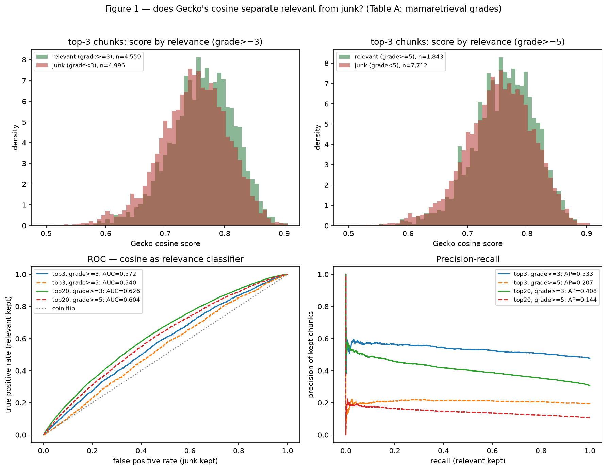
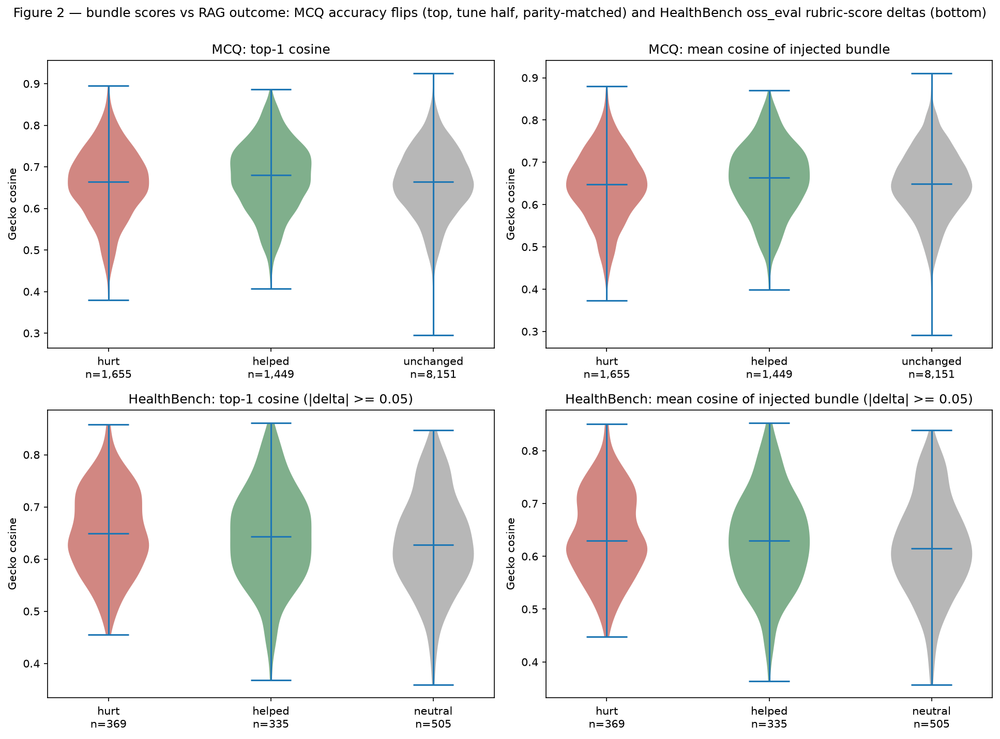
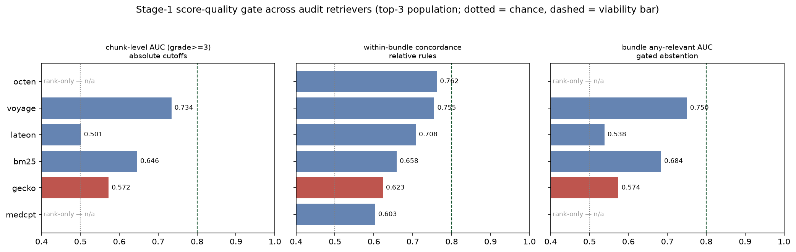

retrieval.similarity_threshold stays
0.0, and the planned sweep/election/ratification stages (Figures 3–5,
Tiers 2–3) are cancelled as moot.
RAG currently harms the system: −1.8 pp on MCQ accuracy, and SAQ zero-recall rows shift toward scope-refusal when off-topic chunks are injected. R1 proposed the cheapest fix: calibrate a per-chunk relevance cutoff on Gecko’s cosine scores so junk bundles trigger fall-back to no-RAG (“abstention over noise”).
Per docs/r1-threshold-tuning-plan.md, two fail-fast gates were fixed
before looking at the data:
Both gates failed, on three independent test surfaces.
| Table | Contents | Provenance / integrity |
|---|---|---|
| A — judged chunks | 63,700 (query, chunk) pairs: Gecko’s top-20 for the 3,185 mamaretrieval audit queries, each with cosine score and 0–6 relevance grade (Qwen3.5-397B judge, validated 95%/85% vs Opus 4.7) | Joined from nmrenyi/mamaretrieval@v0.2.0
(rankings.parquet × judgments). 100% of Gecko’s top-20 is
judged. Base-rate precision reproduces the audit’s P@3 = 0.477 exactly. |
| B — MCQ outcomes | 23,241 rows: the committed ±RAG Gemma runs joined per question (hurt 3,403 / helped 2,980 / unchanged 16,858 — net −423 rows ≡ the −1.8 pp gap), with locally recomputed bundle cosines | Runs 20260520T032705-cluster-norag /
20260520T082028-cluster-rag. Recomputed contexts match the
stored injected contexts on 97.4% of rows; mismatching rows are excluded
from score statistics. |
| B2 — HealthBench outcomes | 1,209 oss_eval rows: ±RAG rubric runs joined on judge-scored
weighted_met (gpt-oss-120b), delta = RAG − no-RAG, with
locally recomputed bundle cosines (latest-user-turn retrieval, app
parity) |
Runs 20260521T123051-cluster-norag-rubric /
20260521T122626-cluster-rag-rubric. Rubric rows store no
context, so per-row parity is not verifiable; inherited from the same
pipeline’s 97.4% MCQ verification. |
All tables, manifests and figures are committed under
configs/config-v0.2.0/results/retrieval_eval/r1-threshold/ and
configs/config-v0.2.0/reports/r1-threshold/.

| Test (top-3 population, n = 9,555) | Result | Viability bar |
|---|---|---|
| Chunk-level AUC, grade ≥ 3 (absolute cutoff) | 0.572 | ≥ 0.80 (stop ≤ 0.60) |
| Chunk-level AUC, grade ≥ 5 (strict relevance) | 0.540 | — |
| Within-query concordance (margin / relative rules) | 0.623 | ≈ 1 would be ideal; 0.5 = chance |
| Bundle top-1 AUC for “any relevant chunk in bundle” (gated abstention) | 0.574 | — |
All four statistics are computed from Table A’s top-3 rows by
retrieval_eval/plot_threshold_signal.py (values in
threshold_signal_metrics.json). The chunk-level AUCs pool all
9,555 chunks, so most compared pairs come from different queries — they test
whether score magnitudes are comparable corpus-wide, the assumption
behind an absolute cutoff. The within-query concordance
restricts the comparison to pairs from the same bundle: across the
4,182 (relevant, junk) pairs that co-occur in a top-3 bundle, the relevant
chunk has the higher cosine 62.3% of the time — the signal available to
relative rules, which only compare a bundle against itself. The bundle-level
AUC scores each of the 3,185 bundles by its top-1 (or mean) cosine and asks
whether that predicts containing any relevant chunk (base rate 81.4%) — the
signal available to gated abstention.
The practical reading is in the PR panel: today’s unfiltered bundle precision is 0.477 and the R1 target was ~0.7–0.8. Even at τ = 0.80 — which discards 75% of the genuinely relevant chunks and keeps only 21% of all chunks — precision reaches just 0.563. The target region is unreachable at any threshold.

| Surface | helped-vs-hurt AUC (top-1 cosine) | Reading |
|---|---|---|
| MCQ (n = 1,655 hurt / 1,449 helped) | 0.553 | Statistically real (Mann-Whitney p = 1.6×10⁻⁷) but tiny: mean score gap 0.016 on near-fully-overlapping distributions. |
| HealthBench oss_eval (369 hurt / 335 helped) | 0.472 | Direction inverted: harmful bundles score slightly higher. Spearman(top-1, delta) = −0.05 (p = 0.085). |
The 0.05 “neutral” deadband is a presentation choice, not evidence; the conclusion is invariant to it:
| deadband | 0.00 | 0.02 | 0.05 | 0.10 | 0.15 | 0.20 |
|---|---|---|---|---|---|---|
| helped-vs-hurt AUC | 0.480 | 0.484 | 0.472 | 0.444 | 0.432 | 0.435 |
These results do not say Gecko is useless — per query, it does real work. HR@3 = 0.814 means four of five bundles contain at least one relevant chunk. A random baseline makes the contrast concrete. The true number of relevant chunks per query is unknown: the judged pool (union of six retrievers’ top-20) finds ~20 per query, but that is a lower bound, and the pool is demonstrably unsaturated — 41.5% of relevant chunks were surfaced by only one of the six retrievers, so more presumably exist outside the pool. The comparison therefore inverts the question instead of estimating: for random top-3 draws from the 63,650-chunk corpus to match Gecko’s 81% hit rate, a query would need 1 − (1 − R/63,650)³ = 0.814, i.e. R ≈ 27,000 relevant chunks — 43% of the entire corpus relevant to a single clinical question. Even a modest 10% hit rate would require ~2,200 relevant chunks per query (3.5% of the corpus). Whatever the true count is, it is nowhere near that, so Gecko’s lift over random is orders of magnitude: it reliably finds chunks on the right topic.
The threshold, however, needed a different ability: among the on-topic chunks that already made the top-3, tell the ones that actually answer the question (47.7%) from the ones that merely share its vocabulary. There the score fails twice over. Across queries, score magnitudes are not comparable — one query’s 0.75 is no more trustworthy than another’s 0.68 — so no fixed cutoff works (AUC 0.572). And within a single bundle, the ordering is nearly random with respect to true relevance — the genuinely useful chunk outscores the junk one only 62% of the time — so margin-from-top-1 rules fail too. Gecko can find the topic but cannot grade usefulness within it, and a threshold can only act on the second ability: by the time scores are compared, the topic-finding work is already done.
The same quantized Gecko TFLite model produces different cosine scores per platform: comparing the cluster (x86) audit rankings against a local Apple-silicon run of the identical script and assets over 1,793 shared pairs — median |Δ| 0.004, p90 0.012, max 0.063; top-3 membership agrees only 84.3% at chunk level. The deployment target (Android/ARM) is a third platform. Consequence: any absolute score threshold would carry a ~±0.02 platform noise band on top of its (absent) signal, and future score-based logic must be calibrated on the deployment platform, not the cluster.
The Stage-1 gate costs nothing to run for the other five audit retrievers —
their top-20 rankings are in rankings.parquet against the same
judgments. medcpt and octen published rank-only data, so the two pooled
score statistics are not computable for them; the within-bundle concordance
survives, because inside a bundle rank order is score order. Stage 2
is not computable for any of them, as no end-to-end runs used their
retrievals.

| Retriever | chunk AUC ≥3 | concordance | bundle AUC | P@3 | Note |
|---|---|---|---|---|---|
| octen-8B | — | 0.762 | — | 0.804 | cluster-only; rank-only data (pooled stats n/a) |
| voyage-4-large | 0.734 | 0.755 | 0.750 | 0.867 | API-only reference ceiling |
| lateon | 0.501 | 0.708 | 0.538 | 0.738 | scores incomparable across queries, decent within-bundle |
| bm25 | 0.646 | 0.658 | 0.684 | 0.417 | on-device feasible (SQLite FTS5, R2a) |
| gecko (deployed) | 0.572 | 0.623 | 0.574 | 0.477 | second-worst concordance, worst pooled scores |
| medcpt | — | 0.603 | — | 0.335 | rank-only data (pooled stats n/a) |
Three readings:
params.json →
retrieval.similarity_threshold remains 0.0; a
nonzero value would be a placebo with platform-noise side effects.retrieval_eval/ are the harness for exactly that.# Table A — audit labels × Gecko rankings (seconds; no GPU)
python -m retrieval_eval.build_sweep_table \
--output-dir configs/config-v0.2.0/results/retrieval_eval/r1-threshold
# Table B — MCQ ±RAG outcomes × recomputed bundle scores (~3 h laptop CPU, or cluster)
python -m retrieval_eval.build_mcq_outcome_table \
--norag-dir configs/config-v0.2.0/results/end_to_end_eval/gemma4-e4b/20260520T032705-cluster-norag \
--rag-dir configs/config-v0.2.0/results/end_to_end_eval/gemma4-e4b/20260520T082028-cluster-rag \
--output-dir configs/config-v0.2.0/results/retrieval_eval/r1-threshold
# Table B2 — HealthBench ±RAG rubric outcomes (~10 min)
python -m retrieval_eval.build_rubric_outcome_table \
--norag-dir configs/config-v0.2.0/results/end_to_end_eval/gemma4-e4b/20260521T123051-cluster-norag-rubric \
--rag-dir configs/config-v0.2.0/results/end_to_end_eval/gemma4-e4b/20260521T122626-cluster-rag-rubric \
--datasets healthbench_oss_eval \
--output-dir configs/config-v0.2.0/results/retrieval_eval/r1-threshold
# Figures 1–2 + metrics JSON
python -m retrieval_eval.plot_threshold_signal \
--table-dir configs/config-v0.2.0/results/retrieval_eval/r1-threshold \
--report-dir configs/config-v0.2.0/reports/r1-threshold --figures 1,2
# §6 — Stage-1 gate across all audit retrievers (seconds; joins only)
python -m retrieval_eval.compare_retriever_gates \
--report-dir configs/config-v0.2.0/reports/r1-threshold